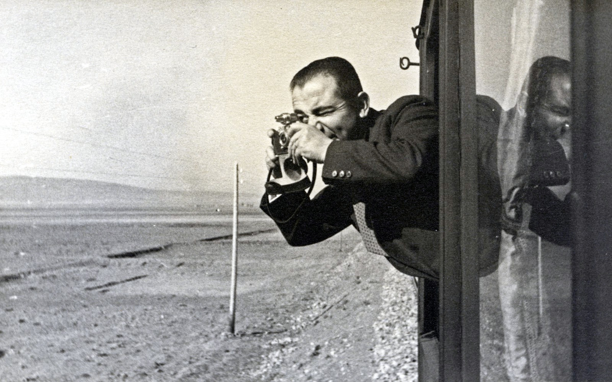

Cemal Işıksel Kimdir? Türk Fotoğrafçılığının Sessiz Ustası

Türk fotoğrafçılık tarihinin önemli isimlerinden biri olan Cemal Işıksel, hem sanatsal hem de belgesel fotoğraf alanındaki çalışmalarıyla Türkiye’de modern fotoğraf anlayışının gelişmesine katkı sağlamış öncü bir fotoğrafçıdır. Özellikle Cumhuriyet dönemi İstanbul’unu belgeleyen çalışmalarıyla tanınan Işıksel, fotoğrafı yalnızca bir kayıt aracı değil, aynı zamanda güçlü bir anlatım dili olarak kullanmıştır.
Bu yazıda Cemal Işıksel’in hayatını, fotoğraf anlayışını ve Türk fotoğrafçılığına bıraktığı mirası detaylı biçimde inceliyoruz.
Erken Yaşamı ve Eğitimi
Cemal Işıksel, 1907 yılında İstanbul’da dünyaya geldi. Genç yaşlardan itibaren sanata ve özellikle görsel anlatıma ilgi duymaya başladı. O dönem Türkiye’de fotoğraf henüz kurumsallaşmış bir sanat dalı olmadığı için Işıksel, kendini büyük ölçüde kendi çabalarıyla geliştirdi.
Fotoğrafla tanışması, dönemin pek çok fotoğrafçısında olduğu gibi teknik merakla başladı; ancak kısa sürede estetik bakış açısı ağır basmaya başladı. Bu yönü, onu yalnızca fotoğraf çeken biri değil, görsel hikâye anlatıcısı haline getirdi.
Fotoğrafçılık Kariyerinin Başlangıcı
Işıksel’in profesyonel kariyeri basın fotoğrafçılığı ile şekillendi. Uzun yıllar çeşitli gazete ve dergiler için çalışarak Türkiye’nin sosyal ve kültürel hayatını belgeledi. Özellikle:
- Cumhuriyet dönemi İstanbul yaşamı
- Şehir kültürü
- Günlük hayat sahneleri
- Portre fotoğrafçılığı
alanlarında yoğun üretim yaptı.
Onu farklı kılan en önemli özelliklerden biri, fotoğraflarında sahicilik duygusunu korumasıydı. Kadrajları çoğu zaman doğal, müdahalesiz ve hikâye odaklıydı.
İstanbul’un Görsel Hafızasını Oluşturması
Cemal Işıksel denince akla ilk gelen konulardan biri İstanbul fotoğraflarıdır. 20. yüzyıl ortası İstanbul’unu belgeleyen en önemli isimlerden biri olarak kabul edilir.
Fotoğraflarında:
- Eski İstanbul sokakları
- Boğaz yaşamı
- Günlük şehir ritmi
- İnsan manzaraları
ön plandadır.
Bu yönüyle çalışmaları bugün yalnızca sanatsal değil, aynı zamanda tarihsel belge niteliği taşır. Pek çok araştırmacı ve tarihçi, dönemin kent yaşamını anlamak için onun arşivlerinden yararlanmaktadır.
Fotoğraf Anlayışı ve Üslubu
Cemal Işıksel’in fotoğraf dili sade ama güçlüdür. Çalışmalarında öne çıkan bazı karakteristik özellikler şunlardır:
- Doğallık: Yapay kurgu yerine gerçek anların peşinden gitmiştir.
- Işık kullanımı: İsminin hakkını verircesine ışığı dramatik ama abartısız kullanmıştır.
- İnsan odaklı yaklaşım: Mekândan çok insan hikâyelerine yoğunlaşmıştır.
- Belgesel estetik: Sanat ile belgesel arasında dengeli bir çizgi kurmuştur.
Onun fotoğraflarına bakıldığında, izleyici yalnızca bir görüntü değil, o anın atmosferini de hisseder. Bu, Işıksel’i dönemdaşlarından ayıran en önemli unsurlardan biridir.
Basın ve Dergi Çalışmaları
Cemal Işıksel uzun yıllar basın dünyasında aktif olarak çalıştı. Dönemin önemli yayınlarında görev alarak foto muhabirliği yaptı. Bu süreçte:
- Siyasi olayları
- Kültürel etkinlikleri
- Toplumsal dönüşümleri
yakından takip etti.
Basın fotoğrafçılığı deneyimi, onun hızlı karar verme, doğru anı yakalama ve güçlü kompozisyon kurma becerilerini önemli ölçüde geliştirdi.
Türk Fotoğrafçılığına Katkıları
Cemal Işıksel yalnızca üretken bir fotoğrafçı değil, aynı zamanda Türkiye’de fotoğraf kültürünün gelişmesine katkı sağlayan bir isimdir. Katkılarını birkaç başlıkta özetleyebiliriz:
- Görsel arşiv oluşturması: Cumhuriyet dönemi şehir yaşamına dair zengin bir fotoğraf mirası bırakmıştır.
- Belgesel yaklaşımı yaygınlaştırması: Fotoğrafın belge gücünü ön plana çıkarmıştır.
- Yeni kuşaklara ilham vermesi: Özellikle sokak ve basın fotoğrafçıları üzerinde etkisi büyüktür.
Bugün Türkiye’de sokak fotoğrafçılığı yapan birçok isim, doğrudan ya da dolaylı olarak onun açtığı yoldan ilerlemektedir.
Vefatı ve Ardında Bıraktığı Miras
Cemal Işıksel 1985 yılında hayatını kaybetti. Ancak arkasında bıraktığı fotoğraf arşivi ve görsel miras, Türk fotoğraf tarihinin en değerli hazinelerinden biri olmaya devam ediyor.
Bugün onun fotoğrafları:
- Sergilerde
- Arşiv koleksiyonlarında
- Fotoğraf tarihi çalışmalarında
yaşamaya devam etmektedir.
Sonuç: Sessiz Ama Derin Bir İz
Cemal Işıksel, gösterişten uzak ama etkisi derin bir fotoğraf ustasıdır. İstanbul’un dönüşümünü belgeleyen kareleri, yalnızca estetik açıdan değil, kültürel hafıza açısından da büyük değer taşır.
Eğer fotoğrafın yalnızca “güzel görüntü” değil, aynı zamanda zamanı durduran bir tanıklık olduğuna inanıyorsak, Cemal Işıksel bu anlayışın Türkiye’deki en güçlü temsilcilerinden biridir.